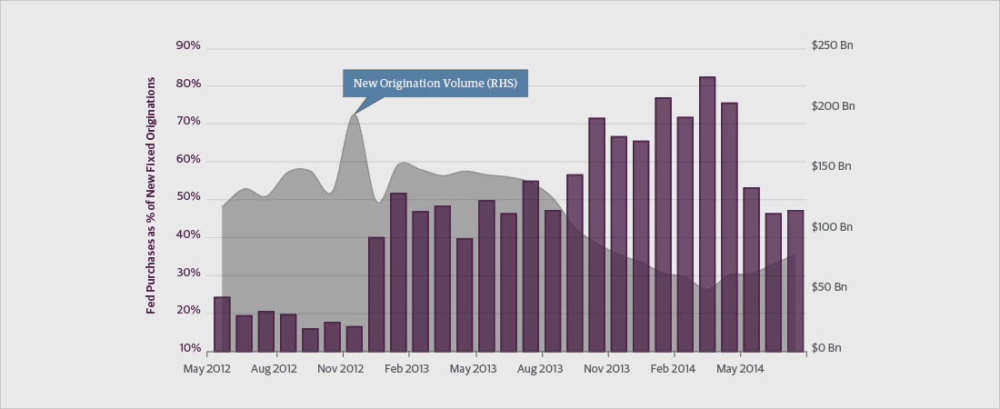
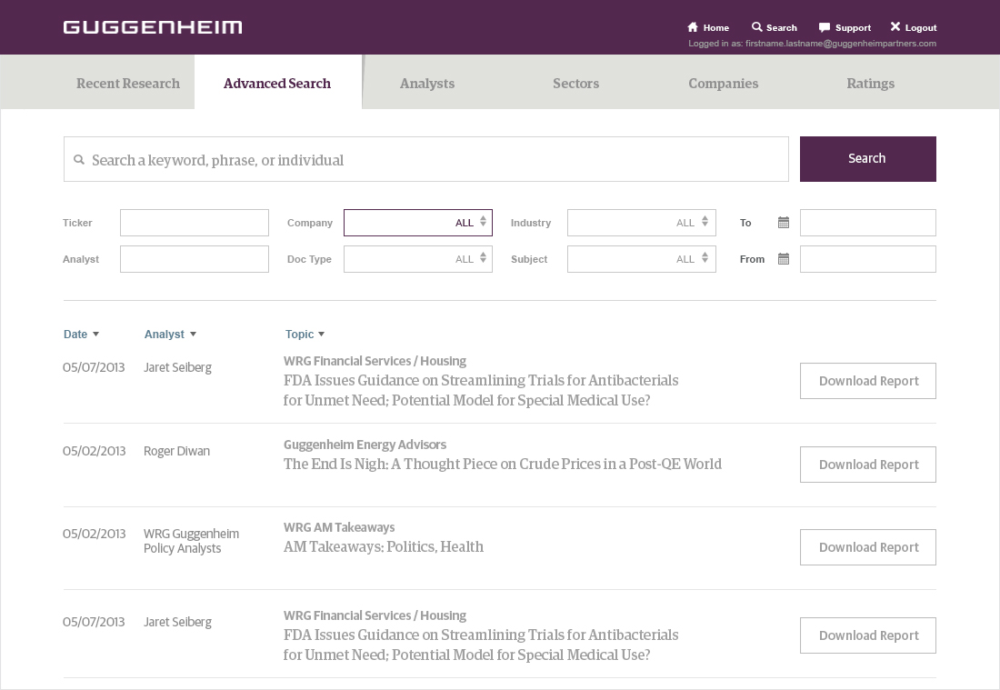

This portal serves as a central spot for institutional investors to access the latest research and analyst reports.

Proposed redesign. As the design lead, my goal is to constantly be improving upon the usability through consistency of visual elements and a strict enforcement of established styles. As the design lead, my goal is to constantly be improving up.

Proposed redesign. As the design lead, my goal is to constantly be improving upon the usability through consistency of visual elements and a strict enforcement of established styles. As the design lead, my goal is to constantly be improving up.